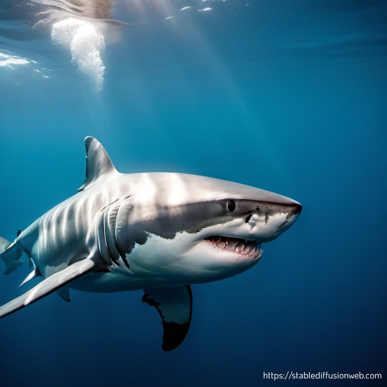
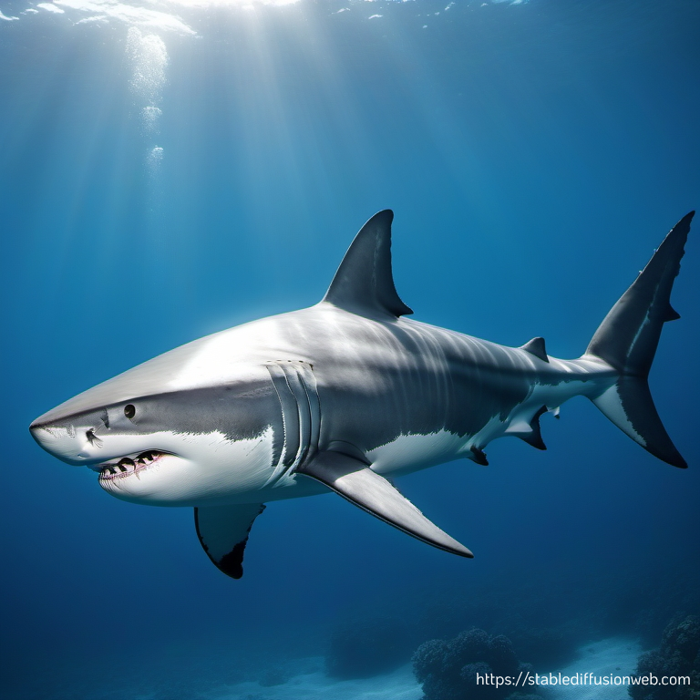

The Unknowns of the "White" Shark

Pengertian
Nama "hiu putih besar" mengacu pada warna tubuh hiu tersebut, yang sebenarnya adalah "Carcharodon carcharias", sebagaimana dijelaskan dalam terminologi ilmiah. Istilah Yunani "chondros" yang berarti tulang rawan dan
"ichthyes" yang berarti ikan mengacu pada kategori ikan bertulang rawan yang mencakup ikan pari dan ikan hiu (Fahmi, 2018). Ukuran hiu putih besar sangat bervariasi, betina sering kali lebih besar daripada jantan. Hiu jantan biasanya berukuran panjang antara 3,4 dan 4 meter, sedangkan hiu betina dapat tumbuh hingga panjang maksimum 4,6 hingga 4,9 meter. Hiu putih terbesar, bagaimanapun, dapat tumbuh hingga panjang 6,1 meter, menurut "Smithsonian National Museum of Natural History" di Washington, D.C. Selain itu, menurut "World Wildlife Fund For Nature", seekor hiu dewasa memiliki berat antara 1.800 dan 3.000 kg.

Klasifikasi
| Klasifikasi Ilmiah |
Animalia |
| Filum |
Chordata |
| Kelas |
Chondrichthyes |
| Upakelas |
Elasmobranchii |
| Ordo |
Lamniformes |
| Genus |
Carcharodon A. Smith, 1838 |
| Spesies |
C. carcharias |